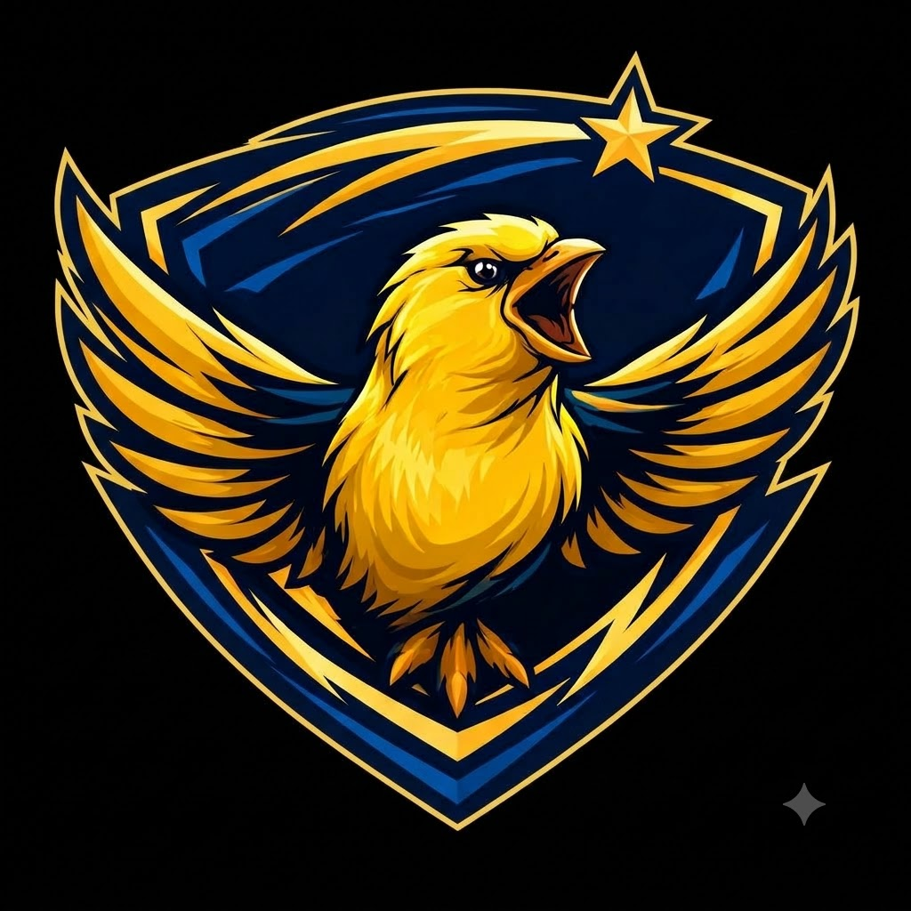

Este catálogo digital foi criado pelo Grêmio Estudantil Máxima para facilitar a organização do acervo da biblioteca da escola. Através dele, todos os livros serão cadastrados e poderão ser facilmente localizados por alunos e professores.
Usando a câmera do celular, aponte para o código de barras do livro. O sistema vai preencher automaticamente as informações disponíveis.
Selecione a categoria/gênero do livro dentre as opções disponíveis.
O sistema vai mostrar em qual armário o livro deve ficar. Confirme e complete o cadastro.